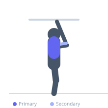
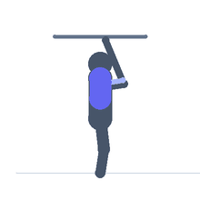

Exercise guide / Assisted Pull-Up Machine
Assisted Pull-Up Machine
The assisted pull-up machine uses a counter-weighted platform that the exerciser kneels or stands on, reducing the effective bodyweight being lifted. It allows beginners or those building toward an unassisted pull-up to train the full pulling movement pattern with correct form. The machine's assistance decreases as strength improves, providing a progressive path toward bodyweight pull-ups.
Primary muscles
latissimus dorsi
Secondary muscles
biceps brachii long head
biceps brachii short head
rhomboid major
teres major
Stabilizers
trapezius lower
transverse abdominis
Equipment
Lat Pulldown Machine


Starting position
- Set the desired assistance weight on the machine. Kneel or stand on the counter-weighted platform. Grip the overhead handles at shoulder width with an overhand grip.
Setup
- Select a heavier assistance weight to make the exercise easier (more weight counter-balances more of your body weight). Adjust the platform height.
Steps
- Step 1: Kneel on the platform and grip the handles with an overhand shoulder-width grip.
- Step 2: Begin with arms fully extended and scapulae elevated.
- Step 3: Depress the scapulae and initiate the pull by driving the elbows toward the floor.
- Step 4: Continue pulling until the chin clears the handles or chest approaches the bar.
- Step 5: Lower under full control until arms are extended and repeat.
Coaching cues
- Pull elbows down and back
- Think about putting your shoulder blades in your back pockets
- Full extension at the bottom every rep
Breathing
- Exhale on the way up, inhale on the way down.
Range of motion
- Full arm extension at the bottom, chin above handle level at the top.
Tempo
- 2-0-2-1
Common mistakes
- Using too much assistance weight, reducing training stimulus
- Letting the platform crash down uncontrolled on each rep
- Not fully extending the arms at the bottom
Safety
- Step off the platform carefully when dismounting — the platform will drop if you step off while weight is selected
- Progressively reduce assistance over time to build toward unassisted pull-ups
Training
- strength: 5–8 reps
- hypertrophy: 8–15 reps
- strength: 3–5 sets
- hypertrophy: 3–4 sets
- Rest: {'strength': 120, 'hypertrophy': 60}